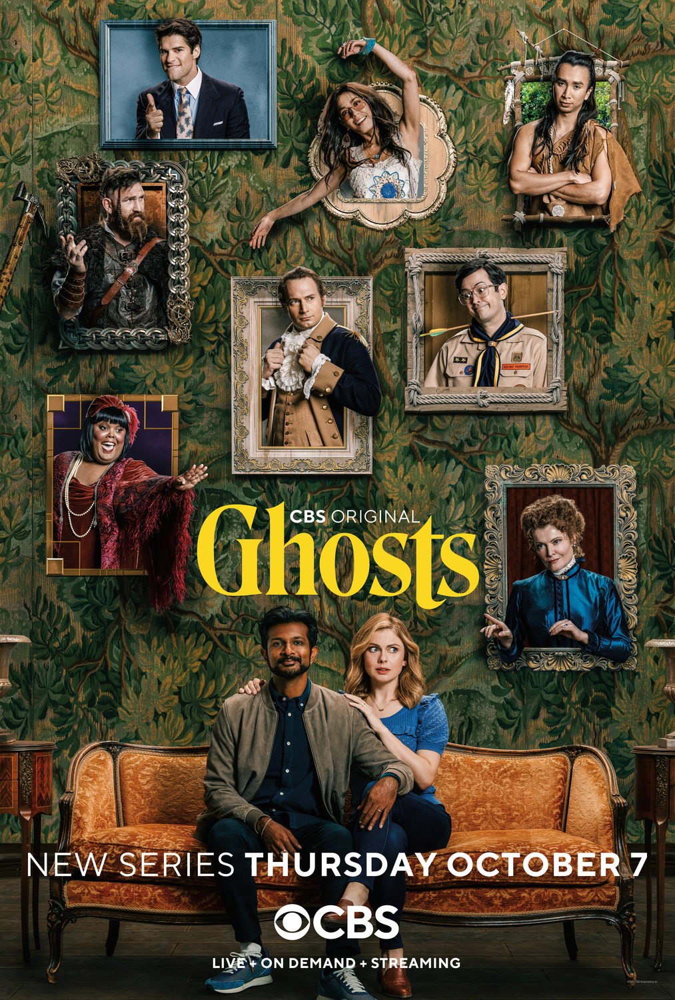

TV Shows
Ghosts
A young couple, Sam and Jay, inherit a haunted mansion and, unaware of their invisible housemates, plan to turn it into a B&B. Their lives become much more complicated after a fall causes Sam to see the ghosts. Based on the UK series.
For All Mankind

In an alternative version of 1969, the Soviet Union beats the United States to the Moon, and the space race continues on for decades with still grander challenges and goals.
The Good Place

Four people and their otherworldly frienemy struggle in the afterlife to define what it means to be good.
Silo

Men and women live in a giant silo underground with several regulations which they believe are in place to protect them from the toxic and ruined world on the surface.
Movies
White Chicks

Two disgraced FBI agents go way undercover in an effort to protect hotel heiresses the Wilson sisters from a kidnapping plot.
Sweet Home Alabama

A young woman who has reinvented herself as a New York City socialite must return home to Alabama to obtain a divorce from her husband after seven years of separation.
Good Boys

Three 6th-grade boys ditch school and embark on an epic journey while carrying accidentally stolen drugs, being hunted by teenage girls, and trying to make their way home in time for a long-awaited party.
Princess Diaries

Mia Thermopolis has just found out that she is the heir apparent to the throne of Genovia. With her friends Lilly and Michael Moscovitz in tow, she tries to navigate through the rest of her sixteenth year.